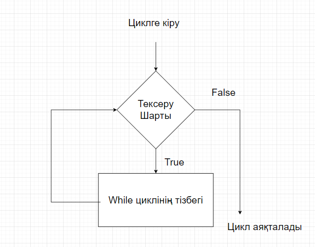

Программалау үшін циклдер кодты кейіп түсіру үшін қолданылады. Мысалы, егер бізге 100 рет хабарлама көрсету керек болса, онда біз циклді қолдана аламыз. Бұл тек жаттығу мысал, циклдерді пайдалану арқылы біз көбірек іс-әрекеттерді жасауға болады.
Алдыңғы оқушыда біз Python for циклі туралы мәлімет алдық. Қазір біз while циклі туралы білетініміз.
Python while циклі белгілі шартты орындайталайтынша кодты іске асыру үшін қолданылады.
while циклінің синтаксисі:
while condition:
# while циклінің тізбегі
Мұнда,
while циклі condition шартын тексередіcondition True болса, while циклінің ішіндегі код іске асырылады.condition қайталанады.False болатын мезгілге дейін жалғастырады.False болғанда цикл тоқтайды.
# 1-ден 5-ке дейін сандарды көрсету программасы
# өзгерменді іске асыру
i = 1
n = 5
# i = 1-ден n = 5-ке дейінгі while циклі
while i <= n:
print(i)
i = i + 1
Шығармашылық
1
2
3
4
5
Программа қалай жұмыс істейді:
| Айнымалылар | Шарт: i <= n |
Әрекет |
|---|---|---|
i = 1 n = 5 |
True |
1 басылады. i 2-ге көтеріледі. |
i = 2 n = 5 |
True |
2 басылады. i 3-ге көтеріледі. |
i = 3 n = 5 |
True |
3 басылады. i 4-ге көтеріледі. |
i = 4 n = 5 |
True |
4 басылады. i 5-ге көтеріледі. |
i = 5 n = 5 |
True |
5 басылады. i 6-ге көтеріледі. |
i = 6 n = 5 |
False |
Цикл аяқталады. |
# пайдаланушы нолды енгізгенге дейін сандарды қосу программасы
total = 0
number = int(input('Сан енгізіңіз: '))
# сан нол болатынша сандарды қосу
while number != 0:
total += number # total = total + number
# жаңа бүтін санды енгізу
number = int(input('Сан енгізіңіз: '))
print('жалпы =', total)
Шығармашылық
Сан енгізіңіз: 12
Сан енгізіңіз: 4
Сан енгізіңіз: -5
Сан енгізіңіз: 0
жалпы = 11
Жоғарыдағы мысалда, while пайдаланушы нолды енгізгенге дейін жатататындай жұмыс істейді. Пайдаланушы нолды енгізгенде, тексеру шарты False болады және цикл аяқталады.
Егер циклдің condition шарты әрдайым True болса, цикл анық жататай (жады толтырылғанша) жұмыс істейді. Мысалы,
жас = 32
# тест шарты әрдайым True
while age > 18:
print('Сізге тауар беріледі')
Жоғарыдағы мысалда condition әрдайым True болады. Сондықтан, цикл бөлігінің коды шексіз рет жұмыс істейді.
Python-да while циклі қосымша else блогы бола алады.
Мұнда, циклдің шарты False болған кейін else блогы орындалады.
counter = 0
while counter < 3:
print('Цикл іші')
counter = counter + 1
else:
print('Егер іші')
Шығармашылық
Цикл іші
Цикл іші
Цикл іші
Егер іші
Ескертпе: Цикл break операторы арқылы тоқтатылса, else блогы орындалмайды.
counter = 0
while counter < 3:
# циклді тоқтату арқылы аяқталады
# else блогы орындалмайды
if counter == 1:
break
print('Цикл іші')
counter = counter + 1
else:
print('Егер іші')
Шығармашылық
Цикл іші
Егер іші
for циклі дайындау саны белгілі болған кезде пайдаланылады. Мысалы,
# бұл цикл 4 рет жатататындай іске асырылады (0-ден 3-ке дейін)
for i in range(4):
print(i)
while циклі дайындау саны белгісіз болған кезде пайдаланылады. Мысалы,
while condition:
# шарт False болған мезгілге дейін кодты іске асырылады